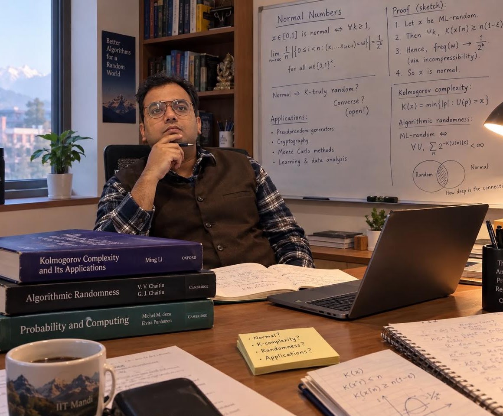

Assistant Professor · IIT Mandi
Prateek Vishnoi
Research interests
- Algorithmic Randomness
- Algorithmic Information Theory
- Quantum Computing
- Theoretical Computer Science
Contact
A17-2-32, Academic Building, North CampusSchool of Computing and Electrical Engineering
IIT Mandi, Kamand, Himachal Pradesh 175075, India
Education
Ph.D. in CSE, IIT Kanpur, advised by Prof. Satyadev Nandakumar and Prof. Sunil Simon.
M.Tech in CSE, NIT Patna.
Research
Recent publications
-
2026
Graph Attention Network Guided Ruin and Recreate for the Heterogeneous Capacitated Vehicle Routing Problem Accepted
- 2026
- 2025
- 2023
- 2022
- 2022
- 2021
- 2020
- 2015
Under review / in preparation
- On Martin-Löf randomness and Borel normality for continued fractions. ZML: Zeitschrift für Mathematische Logik und Grundlagen der Mathematik. Single author.
- Random sequences and random graphs.
Courses
Teaching
- CS212Design & Analysis of Algorithms
- CS304Formal Languages and Automata Theory
- CS510Randomized Algorithms
- IC252Probability and Statistics
- CS520Introduction to Quantum Computing